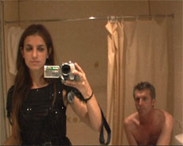

Sibérie

Joana Preiss – Frankreich 2011 – 81 Min.
K: Bruno Dumont, Joana Preiss – S: Clémence Diard, Joana Preiss – T: Thomas Fourel – Mit Joana Preiss, Bruno Dumont – P: Capricci Films
Mini DV – Französisch, Englisch, Russisch
Deutsche Erstaufführung
Joana Preiss Model, Schauspielerin und Sängerin, liiert mit Bruno Dumont, Regisseur von "La Vie de Jésus" und "29 Palms". Zusammen unternehmen sie eine Reise nach Sibirien. Tagebuchartig filmen sie sich wechselseitig, während sie während der langen Fahrt mit der transsibirischen Eisenbahn unausweichlich im engen Zugabteil sich selbst ausgeliefert sind. Die Reise entpuppt sich als immer heftiger werdendes Kamera-Duell zwischen Regisseur und Schauspielerin, ein Duell um Manipulation und Macht, ausgeübt durch das filmische Medium. Der scheinbar intime und schonungslos offene Tagebuchfilm ist ein Experiment an der Schnittstelle von Dokument und Fiktion, dem Joana Preiss erst im Schnitt seine zerfleischende Dramaturgie verlieh.
Joana Preiss, geb. in Marseille, aufgewachsen in Paris. Model, Sängerin und Schauspielerin. Sie spielte in zahlreichen Autorenfilmen mit, u.a. von Olivier Assayas und Pia Marais. Sibérie ist ihr Regiedebüt.